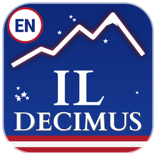

⚠️ Prototype, for testing only. Things can go wrong while we test it: a file may not be processed, or may be lost. Use only data that is backed up, or data made just for this test.

Download IL DECIMUS link to your desktop
Save the file on your Desktop and double-click it to open IL DECIMUS. On Windows it shows the IL DECIMUS icon.